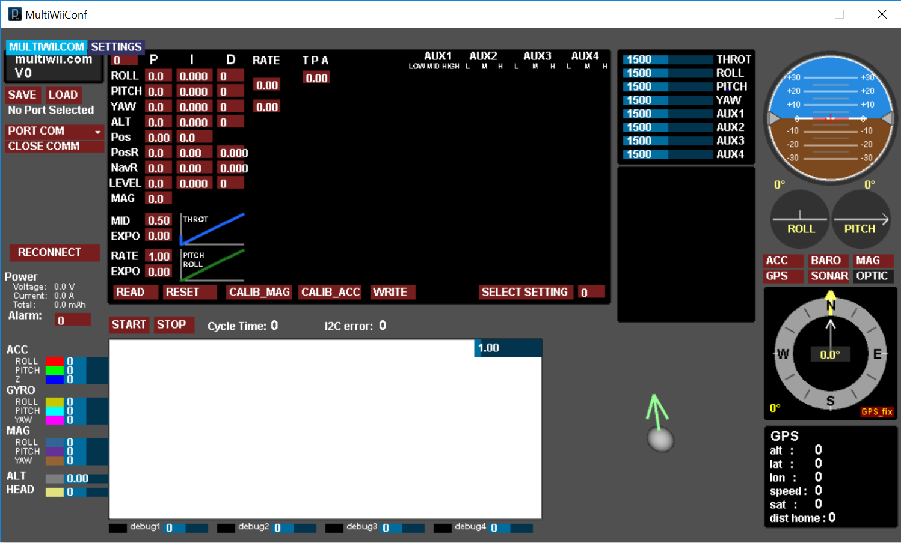
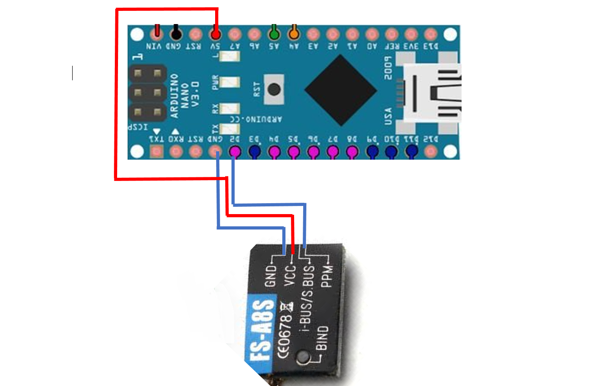
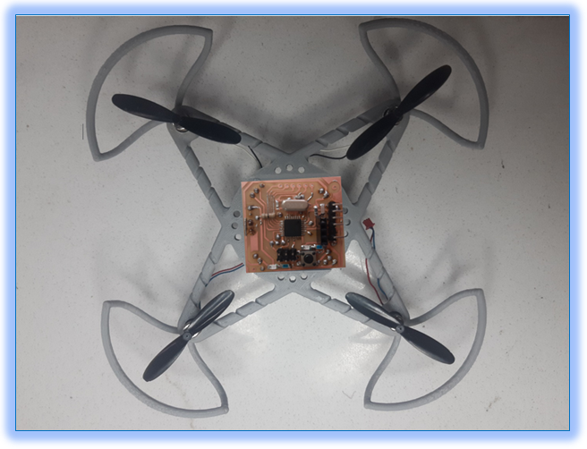
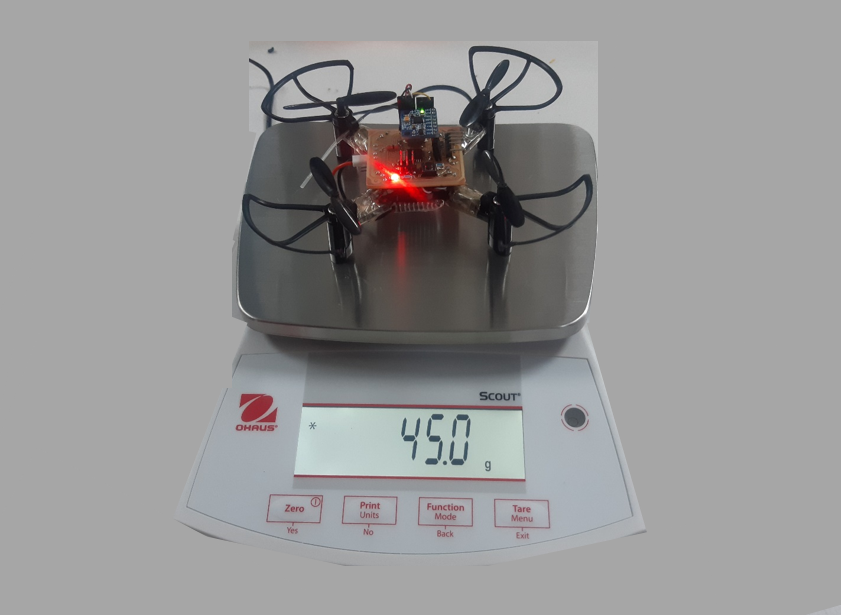
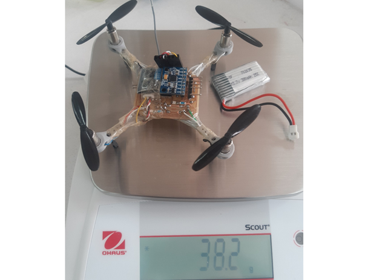

It was in the very first class of Embedded Systems course,
sir Asim—our instructor for this course, apprise us to choose a
semester project that we were supposed to complete till the end of the prevailing
semester. I think all of the students were ecstatic to hear about this, as we had
already done these kinds of projects in previous semesters. But no one really knew
at the moment that this project was going to be one of intricate tasks that nobody
had ever encountered in their student life.
Within the next couple of days, sir provided us with a list of projects all of which seemed
to be mind-blowing, like PCR machine, ventilator, IoT based project, micro-inverter etc. It was
hard to decide which one to choose. We all had to select a project in a group of two members.
I, along with Muhammad Waqas decided to join hands with keeness to complete the project less
than in a month. At first we both decided to work on a PCR machine—as it was a ubiquitous
project and was an important need in the current time of Covid-19 pandemic. We had almost a
week to make a final decision, so there was no rush. We searched on different sources about
PCR, but unexpectedly we found something different, which is a fast evolving field in the 21st
century: unmanned aerial vehicles (UAV’s).
Through some online studies we came to know about the importance of UAV’s, as they are being
used for medical application, agriculture, home deliveries and many more. We both decided to
choose a project that helps us to understand the basic concepts behind this emerging technology.
So we chose drone as our semester project. Meanwhile we met with two of our classmates,
Muhammad Jirjees and Singhe Ahmad, who also chose drone project—since this project was
needed to be complete by two groups together.
Commencement Of Our Endeavours With NodeMCU:
When we started our project, the first attempt was to make a quadcopter using
NodeMCU (ESP-12 module). It is a low-cost open source IoT platform and code that
we needed was available online. The key feature of this module is that it has a
built in wifi chip that can function both as receiver and transmitter. Sir told us
to use this module because it can reduce the weight of the drone and also we do not
need to pay for the receiver that we needed, separately.
Story of failure:
We spent almost five weeks searching about NodeMCU, but the results were not that inspiring.
We had dozens of challenges that we needed to overcome to make everything work. The
first challenge was to understand code and load it successfully
on NodeMCU. After working on it for some couple of days we found that the code available
on Github was not working as we expected—it was just a mesh. Also making an android app
that can work properly with the wifi module, was another challenge. As the time was limited,
we had two options at the instant: either to spend an entire year to understand code, design
an android app and make it work properly, or to move to any other open source platform.
We chose the second option.
Multiwii Open Source platform:
After not getting any intriguing results with NodeMCU, we moved to another platform: Multiwii.
Multiwii is an open source software project aiming to provide the brain of a RC controlled multi rotor
flying platform. It is compatible with several hardware boards and sensors, including Arduino boards—they
both use the same microcontroller.
Below is an explicit, step wise, explanation of how we started? What difficulties we faced and how we resolved
them? Also, what the end result we got after all?
There are different versions of Multiwii available,but download the latest version 2.4 (it is the updated version).
For more details about code refer the section Coding!
MultiWii Config GUI:
One of the key features of Multiwii software is it’s GUI application. GUI application is a best tool
to check if the components like gyro sensor and receiver are working properly or not. It enables the user
to change PID values (more details are provided at the end) from the console—no need to get into the code to
change the values. Below is the figure shows how it looks like.

In the above figure, we can see at the top-left side there is ‘Port Com option’ where we need to select the port
through which our flight controller is connected. At the bottom, there is a rectangular white color portion, this
is where output of gyro can be displayed in graphical view. At the top-right side, there are horizontal bars that
display the values of controls signals like throttle, pitc, yaw etc. Next to it is a circle with brown and blue
portions, this shows the orientation of gyro or more specifically the position of quadcopter. At the top-left side
there are few other options for PID values. These values displayed in P, I and D labels are default ones, we can
also change them according to our requirements which is well explained in the PID Tuning part
Here!
Problems that we faced while working on Config GUI:
We struggled a lot when we were performing the first test with Config GUI. We tested a simple code for MPU6050,
which is mentioned below, but we didn’t get any output at the GUI interface. At first, the GUI was not even
displayed on the console and when we clicked on it, it suddenly disappeared from the computer screen. We searched
on dozens of sources online and finally found some of the solutions. The steps that we followed, and one having
similar conundrum can follow, are described below:
1: First we need to check what version of java is installed in our pc. If there is any old version, then chances
that GUI will not work will be high. This is the link for the latest version of java. For Java 'jdk' Click Here!
For Java 'jre' Click Here!
2: Another thing that was missing in our pc when we were working on GUI was FTDI driver. For proper working of
GUI, one must install this driver first. We installed D3xx=>windows=>x64(64 bit driver)=> Click Here!
3: After following the above steps there are chances that on some windows, like window 10, GUI application will
work, but if still not, then one must need to change the version of Arduino. We found that one some PC's cofig GUI was working
on latest Arduino verion, 1.8.12, but on some PC's it's not. So, in most of the cases Arduino 1.8.9 is the best to choose. Click Here! to download.
After all these steps our config GUI issue was solved and GUI application was working properly.
We have made connections mentioned in the above figure and loaded the code mentioned below.
For code
Click Here!
Once the code was successfully uploaded, the output was like this on GUI:
Receiver Test With Arduino Nano:
After done with the intricacies that we faced in the gyro test, another big challenge was to test
receiver. We made the connection according to the figure below.

As mentioned before the transmitter that we have used is PPM based_it uses only single wire to receive data.
We have conncected VCC with 5V pin, and Gnd with ground pin of Arduino Nano. Next ppm wire is connected
to the interrupt pin (pin 02). After making connections next we follwed the below mentioned steps: 1: Upload the Multiwii code on Arduino Nano. (Click Here! for code.) 2: Bind the transmitter with receiver.(Binding process is Explained Here!) 3: After successful binding, next is to ARM the trasmitter. According
to above mentioned code, ARM key is "MIN-THROTTLE & RIGHT"..
4: If transmitter is armed successfully, a green dot will appear at the ARM portion in Config GUI.
After done with above steps, output on the ossiloscope was like this:
Successfully Controlled Motors Through Transmitter:
When we found that PWM was properly working—we were able to change the duty cycle through the transmitter,
then the next step was to control all four motors through the transmitter. For this test, we took a wooden
board, made drills and then connected the motors. The successful test is shown here:
Test With Our Designed Flight Controller And Frame:
After done with the above mentioned essential tests, we moved towards our own flight controller design and after successful
completion of circuit we connected above two components—MPU6050 and receiver, with our designed flight
controller (for more details about flight controller Click Here!). After circuit testing, we needed a frame
to hold the components, like a flight controller and motors. So, for this we designed a frame ( Click Here!
for more details about frame design) and next was to mount the components on the case. Here is a look after
done with components placement.

This frame looks awesome, thanks to sir Azmat, but there was a problem with this design: its weight.
When we first measured its weight after placing components on it, it was 60.6 grams, which is far more
than what we expected. The propellers and motors that we have chosen were only to lift the drone having
weight around 35g—we had to remove weight around 25.6g. We used a
file to remove some of the material from the frame but this approach did not work. We were only able to reduce
its weight, not less than, 4g. It was a little disappointing, but due to time constraints we decided to use
another frame that was lighter than the one we designed. We placed the components on a new frame. It was not
that intriguing like the one before, but we were optimistic that this frame would work. Here is its look.

As we can see in the above picture that it's weight is still 45 grams, but as mentioned earlier, for a successful
flight we are suppose to reduce its weight below 36 grams. With this weight, probably, it will not going to fly. Here
is a short demonstration.
After done with all of these efforts, here comes another intricacy: weight is still 10g more than what
we required. This was really exasperating, but still we tried to reduce few more components from the flight controller,
like we removed the push button, bootloader—since we had already done with boot loading, few header and filed
the PCB itself. After all these endeavours we were able to remove 3.6 g only. But our requirement was to remove
weight upto 10g. Then we decided to remove the propellers guards too—this seems funny but we left with no other
option. After making all these changes we were harldy abled to reduced its weight to this:

This was a big leap that we had successfully reduced 6.8 grams of its weight, but still this was not enough.
In the case of drones even one or two grams of more weight is a major concern and it causes a failure to the
whole project. As our target was to reduce weight upto 10 grams but we can see in the above picture that its weight
is still 3.2 grams more than what we were keen to achieve—to reduce its weight upto 10g. At first we thought 3.2 g
is not a big deal, so we placed the battery and tried to fly, but again the results were disappointing. Here is a short clip
of how it was behaving after done with above mentioned changes.
In the above mentioned video we can see that there is a problem with one of the motors—it is rising from the other
three sides but not from one edge. It is also clear that other controls like pitch, yaw, roll, and throttle are
properly working. The solution for this conundrum was quite simple: order new motors and make drone fly.
At this instant, we received an official mail for university administration that due to Covid-19 pandemic
university is going to be closed, as a precautionary measure, and classes will be conducted online.
Now guess what? We left with no option but to quit the project at the very edges of the compilation. It
was completely exasperating to hear, but we are ecstatic that through this journey of 3 months we learned
how to carry out a project? How to solve engineering problems through deep study and using different engineering tools.
Furthermore we understand the importance of teamwork and we understand how a good team can lead to success
of any project. Beside this we learned: “Through patience, consistency and hard work we can make any
impossible a possible”.